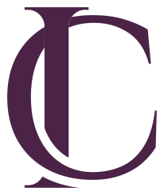

Grafoscopia
IA aplicada à perícia grafoscópica
Como a inteligência artificial pode apoiar o fluxo do exame grafotécnico, do recebimento do material ao laudo, e onde ela não substitui o exame.
Com Patrícia KayoEm breve

Formação
Cursos livres em duas frentes: grafoscopia, com Patrícia Kayo, e área médica, com Dr. Emanuel Behrens.
Grafoscopia
Como a inteligência artificial pode apoiar o fluxo do exame grafotécnico, do recebimento do material ao laudo, e onde ela não substitui o exame.
Área médica
Os cursos da área médica estão em preparação.